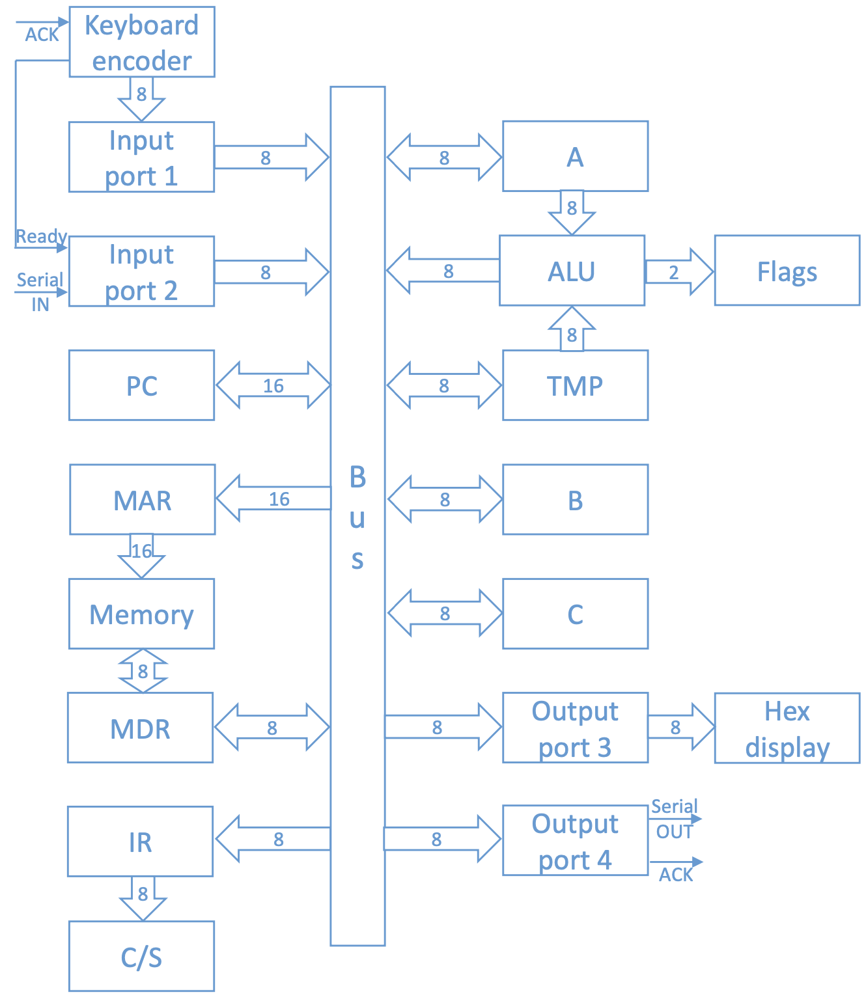
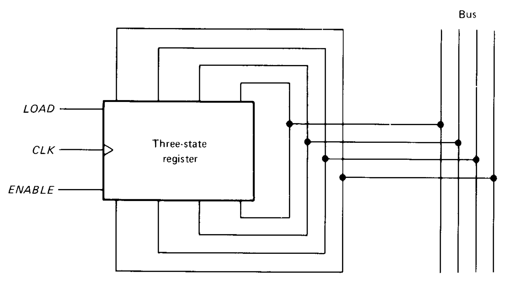
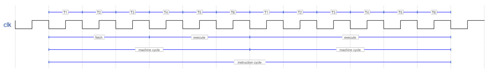
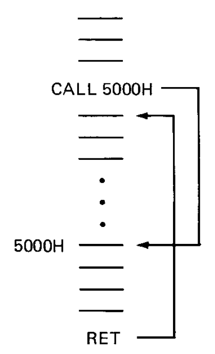

8 SAP-2
The SAP-1 is a computer in that it is able to store a program and data before the calculations begin; subsequently it is able to execute the instructions of the program without human intervention.
The next step in the evolution towards modern computers are the jump instructions, which allow the computer to repeat or skip parts of a program; as we will see below, these tools will open the doors to new levels of computation unthinkable with the previous generation.
8.1 Architecture
R0.49

The diagram is shown in figure [fig:sap-2]; just like the one presented for the SAP-1, the presence of the clock, the reset and the control lines is neglected.
The main difference is the presence, in addition to the tristate connections between the registers and the bus, of the tristate registers: the registers of the SAP-2 have more input and output pins, and to reduce the amount of cables needed to connect the register to the computer - also called wiring capacity - these inputs are short-circuited; this does not cause problems, contrary to what one might think, due to the presence of appropriate control lines that take care of isolating internally input or output in an alternating way. Figure 1.1 clearly shows the saving in wiring capacity: instead of using two sets of cables (one for the input and one for the output) it will be sufficient to use a single set for the entire register; it will then be the LOAD and ENABLE inputs - which cannot be active at the same time - to take care of isolating the appropriate connections. These registers are indicated in the diagram in figure [fig:sap-2] by bidirectional arrows in the connections with other parts of the SAP.

Let’s explore below the characteristics of the registers and the novelties compared to the SAP-1.
Input ports: one port receives data in parallel through a keyboard that encodes hexadecimal values, while a second port is in charge of loading data sequentially; the latter, moreover, has an input called READY that allows the orderly passage of data from the first input port to the SAP processor: only when READY is high, in fact, is the transfer possible.
: analogous to that of the SAP-1, with the only difference that it consists of \(16\) bits and therefore counts from \(0\)x\(0000\) to \(0\)x\(FFFF\); moreover, it is always reset to \(0\)x\(0000\) before each execution of a program.
: during the fetch cycle the MAR receives an address from the program counter which will in turn be sent to the memory, consisting of \(64\text{ }kB\). In particular, the first \(2\text{ }kB\) of memory (from \(0\)x\(0000\) to \(0\)x\(07FF\)) are ROM, and contain the initialization data at the power-on of the SAP and the decoding of the hexadecimal inputs from the keyboard; the remaining \(62\text{ }kB\) (from \(0\)x\(0800\) to \(0\)x\(FFFF\)) constitute the computer’s RAM.1
: an \(8\)-bit register in direct connection with the RAM with the task of writing data to memory or reading data from memory and sending them to the bus; the name is an acronym for Memory Data Register.
: analogous to that of the SAP-1 with the exception of the size, since the number of instructions is greater and \(8\)-bit opcodes are required.
: with the exception of the fact that the control words have a larger size, it is conceptually identical to that of the SAP-1.
: also identical to the SAP-1 version with the difference that it consists of eight bits and no longer four.
: in addition to arithmetic operations, the SAP-2 is also able to perform logical operations. The register that deals with the calculation is also connected to two flags, that is, two flip-flops that keep track of the change of certain conditions: in particular, a sign flag is set when the content inside the accumulator becomes negative and a zero flag when it becomes zero; in general, all instructions involving the accumulator can influence the flags.
: the register in communication with the ALU is called TMP, since it stores the values only temporarily before loading them onto the ALU so that the operation can be performed; to this are added two other registers in which to save data, giving much more freedom in the calculations.
Output ports: similarly to the input ports, here too we have a port associated with a hexadecimal data (which is shown on a special display) and another port linked instead to a serial type signal. From the latter comes a further signal, called ACKNOWLEDGE, which connects to the first input port communicating that the transfer of data in hexadecimal to the processor has been successful, thus setting the READY signal to \(0\) which will in turn set ACKNOWLEDGE to \(0\): this communication process between input, output and processor is called handshaking.
8.2 Instructions
With the increase in computational capacity, the number of instructions also increases, from the five of the SAP-1 to the forty-three of the SAP-2.
Before going into the individual instructions, it is useful to understand how the fetch and execution cycles are regulated. Let’s start by saying that the fetch cycle is identical to the one seen in the SAP-1, so it is divided into three timing states equal for all instructions. The machine cycle is also this time composed of six timing states, but the novelty is that an instruction cycle does not always coincide with a machine cycle: the computationally most complex instruction - which therefore requires the greatest number of timing states - is the CALL, which requires a total of three machine cycles to be executed. In figure 1.2 an example of an instruction cycle consisting of two machine cycles is shown.

That said, we distinguish five types of instructions:
: require access to memory during the execution cycle.
: access the registers directly without going through memory; for this reason they are on average faster than the previous ones.
: modify the order of the program sequence by acting on the program counter.
: allow logical operations.
Other: do not fall into any of the above categories in particular.
8.2.1 Memory-reference instructions
(): loads the accumulator with the content inside the indicated memory address.
It requires three total bytes for execution: one byte is given by the op code and two bytes by the memory address, since this is made up of \(16\) bits. In total it therefore requires three memory addresses.
If the number to be loaded is in the address \(0\)x\(0071\) the instruction LDA \(0\)x\(0071\) will load that number into the accumulator:
\[ R_{113}=0001\hspace{0.8mm}0011 \ \xrightarrow{\textit{LDA} \ 0\text{x}0071} A=0001\hspace{0.8mm}0011 \]
(): loads the content of the accumulator into the indicated memory address.
It requires three total bytes for execution: one byte is given by the op code and two bytes by the memory address, since this is made up of \(16\) bits. In total it therefore requires three memory addresses.
If the memory address in which to load the content is \(0\)x\(00A8\) the instruction STA \(0\)x\(00A8\) will load the content of the accumulator into that address:
\[ A=0001\hspace{0.8mm}0011 \ \xrightarrow{\textit{STA} \ 0\text{x}00A8} R_{168}=0001\hspace{0.8mm}0011 \]
(): loads a data into the register X.
Since there are three registers (A, B, C) this is a total of three instructions.
It requires two total bytes for execution: one byte is given by the op code and the other by the \(8\)-bit operand. In total it therefore requires two memory addresses.
If the register in which we want to load the data is B, and this data is equal to \(0\)x\(35\), it will be enough to use the instruction MVI B \(0\)x\(35\):
\[ \xrightarrow{\textit{MVI B} \ 0\text{x}35} B=0011\hspace{0.8mm}0101 \]
8.2.2 Register instructions
(): copies the data from the register Y to the register X.
Since there are three registers (A, B, C) there will be six total combinations of X and Y and therefore this is a total of six instructions.
\[ \begin{cases} A=0001\hspace{0.8mm}0011\\ B=0011\hspace{0.8mm}0101 \end{cases} \xrightarrow{\textit{MOV A B}} \begin{cases} A=0011\hspace{0.8mm}0101\\ B=0011\hspace{0.8mm}0101 \end{cases} \]
: adds the content of the register X to the content of the accumulator.
Since there are two registers (B, C) this is a total of two instructions.
\[ \begin{cases} A=0011\hspace{0.8mm}0101\\ C=1000\hspace{0.8mm}1001 \end{cases} \xrightarrow{\textit{ADD C}} A=1011\hspace{0.8mm}1110\\ \]
: subtracts the content of the register X from the content of the accumulator.
Since there are two registers (B, C) this is a total of two instructions.
\[ \begin{cases} A=1011\hspace{0.8mm}1110\\ B=0011\hspace{0.8mm}0101 \end{cases} \xrightarrow{\textit{ADD C}} A=1000\hspace{0.8mm}1001\\ \]
(): adds \(0\)x\(01\) to the content of the register X.
Since there are three registers (A, B, C) this is a total of three instructions.
\[ C=1000\hspace{0.8mm}1001 \ \xrightarrow{\textit{INR C}} C=1000\hspace{0.8mm}1010 \]
(): subtracts \(0\)x\(01\) from the content of the register X.
Since there are three registers (A, B, C) this is a total of three instructions.
\[ B=0011\hspace{0.8mm}0101 \ \xrightarrow{\textit{DCR B}} B=0011\hspace{0.8mm}0100 \]
8.2.3 Jump instructions
(): tells the control unit to proceed from the designated memory address.
The instruction JMP \(0\)x\(0020\) placed at the address \(0\)x\(0005\) sets the content of the program counter equal to the operand of the jump, that is precisely \(0\)x\(0020\):
\[ PC=0\text{x}0005 \ \xrightarrow{\textit{JMP} \ 0\text{x}0020} PC=0\text{x}0020 \]
(): performs the jump only if the sign flag is active.
The sign flag is defined as follows:
\[ S= \begin{cases} 0 \ \ \text{if} \ A\geqslant0\\ 1 \ \ \text{if} \ A<0 \end{cases} \]
The instruction JM \(0\)x\(0020\), therefore, will give
\[ PC=0\text{x}0005 \ \xrightarrow{\textit{JM} \ 0\text{x}0020} \begin{cases} PC=0\text{x}0005 \ \ \text{if} \ S=0\\ PC=0\text{x}0020 \ \ \text{if} \ S=1 \end{cases} \]
(): performs the jump only if the zero flag is active.
The zero flag is defined as follows:
\[ Z= \begin{cases} 0 \ \ \text{if} \ A\neq0\\ 1 \ \ \text{if} \ A=0 \end{cases} \]
The instruction JZ \(0\)x\(0020\), therefore, will give
\[ PC=0\text{x}0005 \ \xrightarrow{\textit{JZ} \ 0\text{x}0020} \begin{cases} PC=0\text{x}0005 \ \ \text{if} \ Z=0\\ PC=0\text{x}0020 \ \ \text{if} \ Z=1 \end{cases} \]
(): performs the jump only if the zero flag is not active.
The zero flag is defined as follows:
\[ Z= \begin{cases} 0 \ \ \text{if} \ A\neq0\\ 1 \ \ \text{if} \ A=0 \end{cases} \]
The instruction JNZ \(0\)x\(0020\), therefore, will give
\[ PC=0\text{x}0005 \ \xrightarrow{\textit{JZ} \ 0\text{x}0020} \begin{cases} PC=0\text{x}0020 \ \ \text{if} \ Z=0\\ PC=0\text{x}0005 \ \ \text{if} \ Z=1 \end{cases} \]
and (): calls a subroutine finally returning to the main program.
We call subroutine a program located in a specific point in memory that can be used by another program.
The CALL instruction requires as an operand the memory address where the subroutine begins. Before the SAP proceeds with the subroutine, the two bytes of the current memory address - indicated by the program counter - are saved in the last two addresses of the RAM, that is in \(0\)x\(FFFE\) and \(0\)x\(FFFF\).
The RET instruction for a subroutine corresponds to the HLT of a program: it must always be inserted so that the computer can return to the main program; the SAP, at that point, will retrieve the data contained in the last addresses of the RAM to know where to return.

Example of a subroutine at \(0\)x\(5000\)
8.2.4 Logical instructions
(): inverts all the bits contained in the accumulator.
\[ A=1000\hspace{0.8mm}1001 \ \xrightarrow{\textit{CMA}} A=0111\hspace{0.8mm}0110 \]
(): performs a bitwise AND operation between the accumulator and the register X.
Since there are two registers (B, C) this is a total of two instructions.
\[ \begin{cases} A=0111\hspace{0.8mm}0110\\ B=0011\hspace{0.8mm}0100 \end{cases} \xrightarrow{\textit{ANA B}} A=0011\hspace{0.8mm}0100 \]
(): performs a bitwise OR operation between the accumulator and the register X.
Since there are two registers (B, C) this is a total of two instructions.
\[ \begin{cases} A=0011\hspace{0.8mm}0100\\ C=1000\hspace{0.8mm}1010 \end{cases} \xrightarrow{\textit{ORA C}} A=1011\hspace{0.8mm}1110 \]
(): performs a bitwise XOR operation between the accumulator and the register X.
Since there are two registers (B, C) this is a total of two instructions.
\[ \begin{cases} A=1011\hspace{0.8mm}1110\\ B=0011\hspace{0.8mm}0100 \end{cases} \xrightarrow{\textit{XRA B}} A=1000\hspace{0.8mm}1010 \]
(): performs a bitwise AND operation between the accumulator and an indicated byte.
\[ A=1000\hspace{0.8mm}1010 \ \xrightarrow{\textit{ANI $0$x$B7$}} A=1000\hspace{0.8mm}0010 \]
(): performs a bitwise OR operation between the accumulator and an indicated byte.
\[ A=1000\hspace{0.8mm}0010 \ \xrightarrow{\textit{ORI $0$x$3E$}} A=1011\hspace{0.8mm}1110 \]
(): performs a bitwise XOR operation between the accumulator and an indicated byte.
\[ A=1011\hspace{0.8mm}1110 \ \xrightarrow{\textit{XRI $0$x$AD$}} A=0001\hspace{0.8mm}0011 \]
8.2.5 Other
NOP (): performs no operation.
It is used to delay data processing, occupying four timing states between fetch and execution in which no register is modified.
HLT (): tells the computer to stop executing the program.
It is necessary to place this instruction at the end of every program in the SAP-2, as otherwise unforeseen operations would be obtained caused by uninterrupted processing.
IN (): transfers a data into the accumulator from the indicated input port.
Since there are only two input ports of the SAP-2, the only allowed operands for IN are \(0\)x\(01\) and \(0\)x\(02\).
OUT (): transfers a data from the accumulator to the indicated output port.
Since there are only two output ports of the SAP-2, the only allowed operands for OUT are \(0\)x\(03\) and \(0\)x\(04\).
RAL (): shifts all the bits of the accumulator one position to the left, causing the most significant bit to become the least significant bit.
\[ A=0001\hspace{0.8mm}0011 \ \xrightarrow{\textit{RAL}} A=0010\hspace{0.8mm}0110 \]
RAR (): shifts all the bits of the accumulator one position to the right, causing the least significant bit to become the most significant bit.
\[ A=0010\hspace{0.8mm}0110 \ \xrightarrow{\textit{RAR}} A=0001\hspace{0.8mm}0011 \]
8.2.6 Overall table
How many times is the DCR instruction executed in the following program?
Also, calculate how much memory space this program occupies.
Actually the code itself suggests the memory locations:
MVI C occupies one byte for the opcode and one byte for the operand, so two bytes in total
DCR C occupies only one byte for the opcode
JZ occupies one byte for the opcode and two bytes for the operand, so three bytes in total
JMP occupies one byte for the opcode and two bytes for the operand, so three bytes in total
HLT occupies only one byte for the opcode
The total is \(10\) bytes of memory, distributed as follows:
The first instruction loads the number \(3\) into the register C, which is decremented to \(2\) in the next instruction. For the decrement to occur, the \(3\) is copied into the accumulator so that the ALU subtracts \(1\) and the result returns, precisely, to the register C: the number \(2\) thus remains in the accumulator, which is different from zero and therefore leaves the zero flag inactive. For this reason the JZ instruction is ignored and we pass directly to the JMP, which leads to a new decrement: this process is repeated once more and then once again; at that point the decrement will bring the number to \(0\), will activate the zero flag and therefore the JZ instruction that will stop the program. We deduce that the DCR C instruction is executed a total of three times.
Write a program that multiplies the numbers \(11_{10}\) and \(5_{10}\).
The SAP-2 does not have the ability to perform a multiplication between numbers, so the only possibility is to try to add the number \(11\) five times with itself: for this we will load the number \(0\) into the accumulator A, the number \(11\) into the register B and the number \(5\) into the register C.
From here on I rely on the solution reported in the book (similar to the one given by the professor) which however is not clear to me in one step. To perform the sum, the instruction ADD B is sufficient and for it to be executed five times it is necessary to use the \(5\) in the register C as a counter, a bit like what was done in the previous exercise through DCR C. At this point the book reports the instruction JZ which refers directly to the HLT and then a JMP which refers, instead, back to the sum ADD B.
My doubt concerns precisely the decrement of the content of C: for this to happen, the number in C must be copied into the accumulator; but if this contains the sum of the various \(11\)s, how can we put everything in the same register without losing data? My hypothesis is that before the data transfer from C to A the content of the accumulator is copied into the register TMP; the counter would thus move from the accumulator to the ALU where \(1\) is subtracted (which would also pass from the accumulator) so that the zero flag is eventually activated; finally, the updated counter would return to C and the sum from TMP to A. On the matter I have only found a post on reddit that reports my same doubt (https://www.reddit.com/r/beneater/comments/jppirt/how_do_sap2s_inrdcr_work/), but I do not find any of the answers to be satisfactory.
Anyway, the final code is as follows:
An alternative is to replace the JZ and the JMP with a JNZ:
Finally, it is possible to consider the proposed algorithm as a subroutine to be called:
Write a program that reads a data from input port \(2\): if its LSB is 1 the program will load the ASCII of the character into the accumulator, otherwise it will load the ASCII of the character . This ASCII must then be sent to output port \(3\).
To isolate the last bit it is possible to use the instruction ANI with the operand \(0\)x\(01\), so that all the bits of the input are set to zero except for the last one. At that point it will be sufficient to perform a conditional jump: with JNZ we will know that the last bit is 1, so we will move to the address that contains the instruction that loads the character Y (\(0\)x\(59\)); if the last bit is not 1 this instruction will be ignored, so we will load the character N (\(0\)x\(4E\)) and we will jump directly to the output.
In future explanations and in some exercises the \(2\text{ }kB\) of ROM are ignored and the programs are started from the address \(0\)x\(0000\) instead of from \(0\)x\(0800\).↩︎